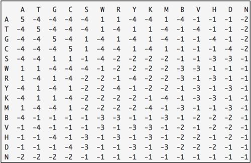

VAJA: Izračun matrike zamenjav (Python)#
Za izračun poravnave potrebujemo ocenjevalno shemo, ki zraven vrednosti za odprtje in razširitev vrzeli vsebuje še vrednosti za enakost in neenakost. Najpreprostejši primer za slednje je, na primer, 1 za identičnost in 0 za različnost, a to ne odseva relativne mutabilnosti posameznih aminokislinskih ali nukleotidnih ostankov. Za ta namen so bile razvite t. i. matrike zamenjav (substitution matrices), ki so sáme izračunane na osnovi poravnav.
Namen vaje#
Namen vaje je na osnovi enostavne poravnave dveh zaporedij izračunati matriko zamenjav za nukleotidna zaporedja. Uporabili bomo kar zgled iz BioPythona, uporabili pa bomo še knjižnjico numpy.
Primer kode#
V spodnjem primeru sta uporabljeni dve res kratki zaporedji in sicer:
# preberemo zaporedji
from Bio import SeqIO
sequence1 = SeqIO.read('vhod/matrika_zamenjav_seq1.fasta', 'fasta')
sequence2 = SeqIO.read('vhod/matrika_zamenjav_seq2.fasta', 'fasta')
# izpišemo zaporedji
print('Zaporedje 1: %s' % sequence1.seq)
print('Zaporedje 2: %s' % sequence2.seq)
Zaporedje 1: AGAGGATAGCATAGACATGACATAGAC
Zaporedje 2: AGCGGATCGCATAGCAATGCCATCGAC
Vidimo, da sta zaporedji enako dolgi, razlik med njima je malo.
Za izdelavo matrike ju moramo najprej poravnati, pri tem pa bomo naredili lokalno poravnavo z uporabo nekih namišljenih vrednosti za identičnost, neidentičnost ter vrzeli:
from Bio.Align import PairwiseAligner
aligner = PairwiseAligner()
# definiramo, da delamo lokalno poravnavo
aligner.mode = 'local'
# nastavimo vrednosti za ujemanje in neujemanje ter vrzeli
aligner.match_score = 2 # ujemanje
aligner.mismatch_score = -3 # neujemanje
aligner.open_gap_score = -7 # odprtje vrzeli
aligner.extend_gap_score = -2 # razširitev vrzeli
# naredimo poravnavo
alignments = aligner.align(sequence1.seq, sequence2.seq)
# vzamemo prvo poravnavo od možnih večih
alignment = alignments[0]
# izpišemo poravnavo
print(alignment)
AGAGGATAGCATAGACATGACATAGAC
||.||||.||||||..|||.|||.|||
AGCGGATCGCATAGCAATGCCATCGAC
Za štetje si najprej definiramo matriko, ki vsebuje posamezne ostanke, v našem primeru gre za nukleotide:
# definiramo dvodimenzionalno matriko/array (dims=2)
from Bio.Align.substitution_matrices import Array
frequency = Array('ACGT', dims=2)
# izpišemo matriko - zdaj je še prazna
print(frequency)
A C G T
A 0.0 0.0 0.0 0.0
C 0.0 0.0 0.0 0.0
G 0.0 0.0 0.0 0.0
T 0.0 0.0 0.0 0.0
Ko imamo pripravljeno poravnavo lahko preštejemo pare ostankov (v tem primeru nukleotidov) in izpišemo njihovo frekvenco v obliki matrike.
for (start1, end1), (start2, end2) in zip(*alignment.aligned):
seq1 = sequence1[start1:end1]
seq2 = sequence2[start2:end2]
for c1, c2 in zip(seq1, seq2):
frequency[c1, c2] += 1
print(frequency)
A C G T
A 7.0 5.0 0.0 0.0
C 1.0 3.0 0.0 0.0
G 0.0 0.0 7.0 0.0
T 0.0 0.0 0.0 4.0
Vidimo, da imamo 7 parov A-A, 1 par A-C ter 5 parov C-A … Skupno število parov je 27, kar je v našem primeru enako dolžini poravnave, saj nimamo vrzeli.
V nadaljevanju frekvenco posameznega para delimo s število vseh parov (izvedemo normalizacijo), pri tem pa upoštevamo, da sta para A-C ter C-A ekvivalentna (ter analogno za ostale pare). Slednje pomeni, da bomo dobili simetrično matriko.
import numpy
# izračunamo verjetnost za posamezni par
probabilities = frequency / numpy.sum(frequency)
# upoštevamo ekvivalentnost npr. A-C in C-A
probabilities = (probabilities + probabilities.transpose()) / 2.0
# izpišemo matriko, na 4 decimalna mesta
print(format(probabilities, "%.4f"))
A C G T
A 0.2593 0.1111 0.0000 0.0000
C 0.1111 0.1111 0.0000 0.0000
G 0.0000 0.0000 0.2593 0.0000
T 0.0000 0.0000 0.0000 0.1481
Izračunamo verjetnosti ozadja, t. j. verjetnost pojavljanja posameznega ostanka posamično v posamičnem zaporedju. To je dejansko vsota po stolpcih ali po vrsticah - vseeno je, kaj vzamemo, saj je naša matrika simetrična.
# seštejemo in izpišemo
background = numpy.sum(probabilities, 0)
print(format(background, "%.4f"))
A 0.3704
C 0.2222
G 0.2593
T 0.1481
Zdaj lahko izračunamo število pričakovanih substitucij, ki je enako kar produktu verjetnosti ozadja s samim seboj.
expected = numpy.dot(background[:,None], background[None, :])
print(format(expected, "%.4f"))
A C G T
A 0.1372 0.0823 0.0960 0.0549
C 0.0823 0.0494 0.0576 0.0329
G 0.0960 0.0576 0.0672 0.0384
T 0.0549 0.0329 0.0384 0.0219
Končno, matriko zamenjav izračunamo kot logaritem obetov. Obeti so verjetnosti, deljemo z naključno pričakovanimi vrednostmi, vzamemo pa logaritem na osnovi 2.
oddsratios = probabilities / expected
scoring_matrix = numpy.log2(oddsratios)
print(scoring_matrix)
A C G T
A 0.9 0.4 -inf -inf
C 0.4 1.2 -inf -inf
G -inf -inf 1.9 -inf
T -inf -inf -inf 2.8
/Users/miha/opt/anaconda3/lib/python3.7/site-packages/Bio/Align/substitution_matrices/__init__.py:212: RuntimeWarning: divide by zero encountered in log2
raw_results = super().__array_ufunc__(ufunc, method, *args, **kwargs)
Opazite, da ker nekaterih zamenjav nismo opazili, dobimo ponekod “vrednosti” -inf, prav tako smo dobili napako.
Naloga#
Vaša naloga je, da na osnovi dveh daljših nukleotidnih zaporedjih pripravite matriko zamenjav za nukleotidna zaporedja.
Ustrezna zaporedja pridobite iz zbirke GenBank. Na primer, lahko vzamete genomski zaporedji za gen 16S rRNA za dve različni bakteriji, lahko pa vzamete tudi kakšni daljši ali krajši zaporedji. Pazite le, da bosta zaporedji homologni. Izračunano matriko zamenjav primerjajte z matriko EDNAfull (imenovano tudi DNAfull ali NUC4.4), ki se splošno uporablja pri poravnavah nukleotidnih zaporedij. Prikazana je spodaj.
